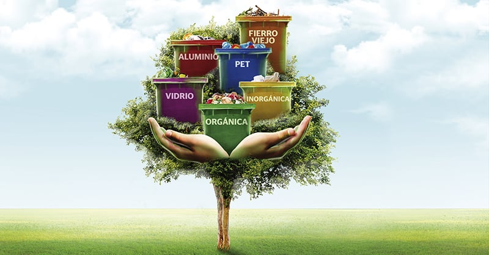

Arrojar basura al medio ambiente es una práctica dañina que afecta nuestra salud, la biodiversidad y el equilibrio ecológico. Cada año, toneladas de desechos contaminan nuestros océanos, ríos y suelos, causando graves impactos ambientales y sociales.
La basura desechada incorrectamente contamina el agua que bebemos y los alimentos que consumimos. Además, puede representar un peligro para la vida silvestre, ya que los animales pueden quedar atrapados en los desechos o ingerirlos, lo que provoca lesiones e incluso la muerte.
La basura que arrojamos hoy, es el problema que enfrentaremos mañana.
Opta por productos reutilizables en lugar de desechables y lleva tu propia bolsa de tela al hacer compras.
Clasifica tus residuos y deposítalos en los contenedores de reciclaje adecuados.
Únete a actividades de limpieza de playas, parques y calles en tu comunidad.
El problema de la basura no solo afecta al medio ambiente, sino también a la economía y la calidad de vida de las personas. La limpieza de desechos representa un costo considerable para los gobiernos y las comunidades, y la presencia de basura en áreas públicas puede disminuir el atractivo turístico y el valor de las propiedades.
Además, la basura contribuye al cambio climático al liberar gases de efecto invernadero cuando se descompone. Esto agrava los problemas ambientales existentes, como el calentamiento global y la degradación de los ecosistemas.
Es fundamental que tomemos conciencia sobre el impacto de nuestros hábitos de consumo y aprendamos a reducir, reutilizar y reciclar nuestros desechos. Al tomar medidas para minimizar nuestra generación de basura y disponer adecuadamente de los desechos, podemos proteger el medio ambiente y asegurar un futuro sostenible para las generaciones venideras.
Pequeños cambios hacen grandes diferencias. Sé parte del cambio y ayuda a preservar nuestro hogar.
Encuentra organizaciones locales que se dediquen a la conservación del medio ambiente y únete a ellas. Tu apoyo es vital para hacer la diferencia.